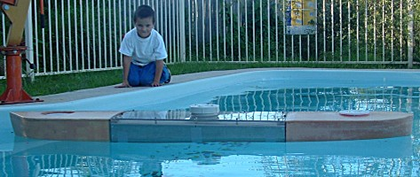
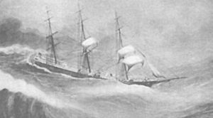
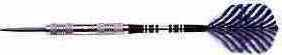
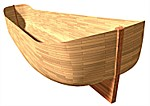

The worst thing to happen in heavy seas is to have the ship turn side-on to the waves. This is called broaching [4], which can capsize even a large ship under certain conditions. During a serious storm the bow is usually kept facing into the wind, the ship sometimes going backwards. Even ancient ships show features designed to avoid broaching. [1]
Noah's Ark was not a cube which handles waves equally from all directions. The dimensions given in Genesis 6:15 describe a hull six times as long as it was wide, proportions very close to a modern ship. This means it should avoid a beam sea (side-on to the waves) when conditions are rough. Heavy seas would be expected in the worldwide flood - especially during the wind stage. (Genesis 8:1) [2]
A ship without power is vulnerable since the heading cannot be maintained by propulsion. In this case a sea anchor could be used. This is effectively an underwater parachute that pulls on the bow of the ship as the wind and waves push the vessel backwards. http://www.biggideas.com/sea-anchor/html/offshore.html
It is important to remember that waves do not transport the water but oscillate it in the one spot - or nearly so. Although the waves appear to move past the ship the water itself is almost stationary, so a sea anchor will tend to hold its position. Although effective, a sea anchor requires attention because ropes have a tendency to get tangled up, and waves are not always coming exactly from the same direction. A variation on the theme is the drogue, which is designed to be towed behind the ship in a following sea and pulls on the stern to improve directional stability. In contrast the sea anchor is attached to the bow and has a much higher drag.
Problems with attached drag devices. Maintenance of a sea anchor would be labor intensive. Floating debris such as tree logs would also be a significant problem.
To get the Ark to act like a weather vane and keep itself in line with the wind, the stern could drag in the water and the bow catch the wind. The stern drag might be generated by protruding features of the hull itself (logs etc) or simply a less streamlined design. The bow would need some sort of obstacle to the wind - perhaps a sail, a wall or raised area like a forecastle or cabin.
If the wind has turned the Ark (broaching) side-on the the waves (beam sea), there is a risk of capsize. The simplest way to get a symmetrical vessel out of this situation is to have a significant amount of trim (slope of the ship in the water from bow to stern - usually due to uneven loading). For example, trim to stern will sit the stern deeper in the water and allow the bow to catch more air and less water, swinging it around. The effectiveness of this arrangement will depend on the relative differences in bow and stern profile underwater, which defines the location of the center of transverse water pressure with respect to the transverse center of wind load. Even without deliberate buoyancy difference between bow and stern, trim could be achieved simply by loading heavy cargo towards the stern.

Trim to stern in a symmetrical loading using reduced stern buoyancy. See Model Test
A skeg based design will travel faster than a deliberately dragging stern, which may (or may not) lead to the dangerous quartering condition where the ship almost begins to "surf" with a wave. Surfing is dangerous [3] because the vessel is unstable and needs to be controlled (ever tried surfing?). The answer lies in the relative speed of the vessel driven by the wind compared to the apparent speed (celerity) of the waves. In the open sea, with large well developed waves, the distance between waves (wavelength) is long. Wave speed increases with wavelength, so the wind driven waves of the later stages of the flood would be expected to travel relatively fast compared to the speed of the vessel. Dr Allen Magnuson estimates only a few knots for the wind driven Ark. The high speed and low gradient of deep sea waves is why you only see surfers near shallow water where waves have slowed and become steeper.
This means the stern is doing all the work cutting through the passing waves, which is normally the job of the bow.
Strong winds are pushing the Ark to the right of the picture. A wave has just passed the stern. Tim Lovett 2004. No anti-broaching features are shown here.

The original photo showing the Ark-sized ship with bow air-born. http://www.tv-antenna.com/heavy-seas/ The superstructure is at the stern, safe from waves over the bow.
In any case, the basic principle of aligning the ark is very simple. The vessel needs to catch the wind at the bow and catch the water at the stern. This is analogous to a badminton shuttlecock - mapping ship water resistance to shuttlecock air resistance, and ship wind force with shuttlecock gravity force. The ball has the mass and travels under the pull of gravity - like the drive of the wind catching bow feature. The feathers drag the tail just like the drag of the stern in the water.


Shuttlecock Ark using deliberate drag at the stern.
Using a skeg rather than drag at the stern is like a feathered arrow or dart. Here, gravity at the front of the dart represents the wind catching features of the bow, and the feathers represent the skeg details at the stern. similar to an arrow, this design would be most effective if the Ark has a bit of speed.

American clipper "Ringleader", built in 1853. Painting by A.V.Gregory showing the ship in the South Atlantic, "riding her easting down". In the heavy sea and strong wind, there is a risk of broaching. The sails are concentrated toward the bow with the mizzen (third) mast completely bare, which helps to keep the vessel pointing with the wind.

A dart maintains direction as it is pulled by mass at the front and steered by fins at the rear.

Skeg and forecastle design. Copyright Allen Magnuson 2005.
The raised area the the bow (forecastle) is pushed by the wind while the fin shaped keel at the stern (skeg) keeps it from going sideways. The skeg has a similar effect to the fin of a surf board - it inhibits sideways motion in the water. This is a standard design for a boat hull, used in combination with cut-up (rising bottom) towards the stern.

Skeg feature for lateral water resistance at stern, improves directional stability. Copyright Allen Magnuson, Tim Lovett 2005.
This general arrangement is found on most modern ships, except that the typical bulk carrier is in reverse. The superstructure is at the stern which helps to 'steer' the vessel with bow pointing towards the wind. If the superstructure was at the bow, wind and waves would tend to push the bow behind the stern - which is a broaching action.
There are some waves that can damage or capsize almost any ship, regardless of how well designed the vessel.[5] Ships even larger than Noah's Ark have disappeared in storms.[6] The scale of the Ark sets a limit on the size of encountered breaking waves. The Hong study uses the limiting roll angle to determine a wave limit of 30m, but without indication of a specified wave slope or wavelength. A rogue wave [7] as a 30m breaking wave could be nasty, in a beam sea it could be lethal. Genesis 8:1 tells of God remembering Noah, which might imply that God did not allow a freak rogue wave to hammer the Ark. On the other hand, it might be referring to God beginning the process of clearing up the flood.
However, unlike the extreme conditions of a developing sea in a modern hurricane or typhoon, where waves can be steep and seas confused, the largest wind generated flood waves are more likely to have had a very long wavelength. This keeps the gradient shallow. However, it would be prudent to design Noah's Ark to handle very rough seas, including substantial green sea loads. (Solid water on the roof, not just foam and spray)
1. History of ship seakeeping (storm seaworthiness). Excuse the translation from Russian, but this is a nice introduction to hull shape and design for storm seakeeping based on a variety of solutions through history. http://www.science.sakhalin.ru/Ship/Vlad_E1.html Return to text
2. Photo of a ship much larger than the ark without propulsion in a big sea. http://www.biggideas.com/sea-anchor/html/navyship.html More photos of heavy seas; http://www.tv-antenna.com/heavy-seas/ and http://www.sailingscuttlebutt.com/photos/04/bigwaves/ Return to text
3. Surfing is dangerous. (Advice for recreational craft negotiating a following sea). Marine Safety Victoria Australia.
Inbound – heading back to port:
4. Broaching. The unplanned turning of a vessel to expose its side to the oncoming waves. Another description; When the stern tries to overtake the bow - typically when a buoyant stern is lifted by an overtaking wave as the bow digs into the water. "A sudden swooping around broadside to the wind and waves while running." www.hoofers.org/sailing/Manuals/tech_manual/glossary.html. "The unplanned turning of a vessel to expose its side to the oncoming waves. In heavy seas this could cause the boat to be knocked down." www.geocities.com/Colosseum/Sideline/1724/terms/all.htm
5. The role of chance. http://www.sailingusa.info/cal__capsize.htm (Ref: Rob Mundle in Fatal Storm, Publisher's Afterward p 249. International Marine/McGraw-Hill Camden, Maine.)
'One of the greatest sailing disasters in recent maritime history, the 1998 Sydney-Hobart Race, offered a number or lessons regarding the performance of sailboats and crews in heavy weather conditions. The 1998 Sydney to Hobart Race Review Committee report, summarized by Peter Bush, the committee chair, reported the following as one of the significant findings: "There is no evidence that any particular style or design of boat fared better or worse in the conditions. The age of yacht, age of design, construction method, construction material, high or low stability, heavy or light displacement, or rig type were not determining factors. Whether or not a yacht was hit by an extreme wave was a matter of chance."
According to Andrew Claughton in Heavy Weather Sailing 30th ed. p 21
"This (the test data presented in the chapter) suggests that alterations in form (of a sailboat) that improves capsize resistance may be rendered ineffective by a relatively small increase in breaking wave height." Return to text
6. The 294m MV Derbyshire was lost in a typhoon in the South China Sea in 1980. It was only 2 years old. An inquiry ruled that a hatch cover had failed as huge waves buffeted the 160,000 tonne bulk carrier. http://www.worldwideflood.com/flood/waves/waves.htm Studies suggested the hatch covers were not strong enough to take such a depth of water on deck. Noah's Ark was only half this length, so it is quite conceivable that a heavy sea could give it a workout - like green seas on the weatherdeck (roof). This is another reason to employ a substantial roof structure. Was it really this rough? We don't know, but no other ship or boat survived to tell the story - that's a clue. Return to text
7. Rogue waves a real threat. http://www.chron.com/cs/CDA/ssistory.mpl/outdoors/tompkins/2747663. Another example of scientists dismissing anecdotal evidence, ignoring a very large number of witnesses. Once considered the tall stories of a sailor's imagination, mountainous rogue waves are finally being acknowledged. Excerpt:
Laser devices mounted on oil platforms measured an 85 ft (26m) wave in 1995. A 95-foot (29m) wave came at the Queen Elizabeth II during a storm in the North Atlantic in February 1995. The European Space Agency program "MaxWave" used precise imaging equipment to collect 30,000 images of Atlantic ocean. Researchers were stunned to find 10 individual rogue waves of more than 82 ft (25m). Some of the waves measured as much as 100 feet (30m). The data confirmed rogue waves do exist, and they appear to be much more common than anyone would have imagined. Return to text
8. Jinnaka, T., Tsutsumi, T., and Ogiwara, S., "Hull Form Design Derived From Wave Analysis"9. Principles of Naval Architecture. SNAME.